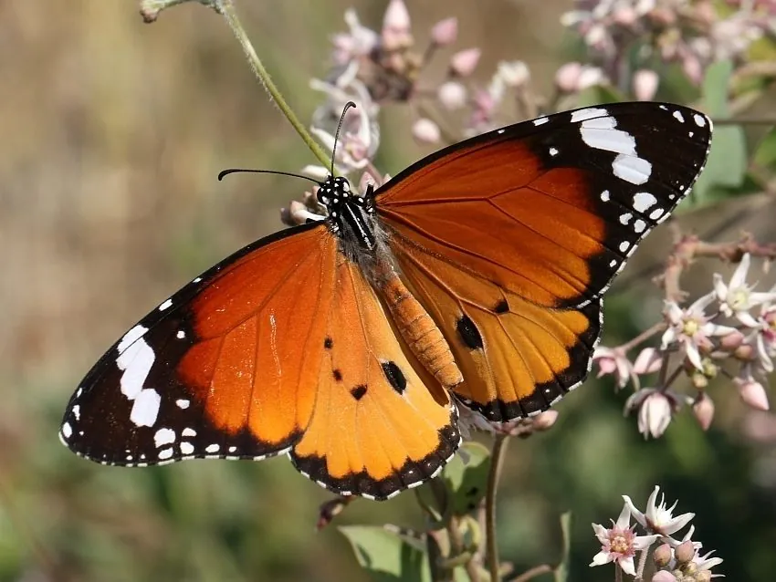

昆虫 · 动物界
金斑蝶 Danaus chrysippus

翅面橙黄、翅端黑底白斑的斑蝶，幼虫取食萝藦科植物并积累毒素，鸟类捕食后会呕吐，是经典的警戒色昆虫。
- 分类
- 门节肢动物门纲昆虫纲目鳞翅目科蛱蝶科属斑蝶属
- 栖息环境
- 开阔草地、农田边缘、灌丛和花园
- 地理分布
- 非洲、亚洲南部、澳大利亚，中国南方也有分布
- 保护级别
- 暂无评估
物种志
金斑蝶成虫翅展 65–80 mm，翅面橙黄至橙红色，前翅顶角黑色，黑区内有一列白色斑点，后翅中央有三四个黑色圆斑；翅反面颜色较浅，斑纹与正面类似。身体黑色，密布白色斑点。
金斑蝶广泛分布于非洲、亚洲南部和澳大利亚，在中国南方也有分布，生活在开阔的草地、农田边缘和灌丛中。幼虫取食马利筋、萝藦等萝藦科植物，把其中的强心苷类毒素储存在体内，使成虫和幼虫都带有毒性；鸟类捕食后会呕吐，从此避开这种橙黑相间的蝴蝶，这就是著名的警戒色。金斑蝶飞行缓慢，常在空中滑翔，雄蝶会追逐雌蝶。它还会进行季节性的长距离迁飞，在非洲和澳大利亚有大规模的迁徙记录。
形态与习性
- 食性幼虫取食马利筋、萝藦等萝藦科植物
- 翅展65–80 mm
- 警戒色橙黑相间，体内含强心苷毒素
- 飞行缓慢滑翔，雄蝶追逐雌蝶
- 迁飞有季节性长距离迁徙记录
- 分布非洲、亚洲南部、澳大利亚
趣味知识
- 金斑蝶的幼虫把马利筋的毒素存进体内，鸟类吃后会呕吐。
- 它橙黑相间的配色是一种警戒色，等于在警告“我有毒”。
- 金斑蝶在非洲和澳大利亚会成群迁飞，场面十分壮观。